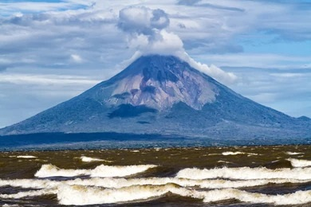

About Me
Hello! My name is Herzan Francisco Huerta, and I am from Nicaragua. I enjoy learning web development. Reading has always been a passion of mine. It helps me stay current with emerging technologies, software development methodologies, and best practices. Books on problem-solving, computer science, or even fictional stories spark creativity and inspire innovative thinking in my coding projects.

Nicaragua
Managua is the capital and largest city of Nicaragua, located on the southwestern shore of Lake Managua. It serves as the country's political, economic, cultural, and educational center. The city is known for its warm climate, lively street life, and welcoming people.
